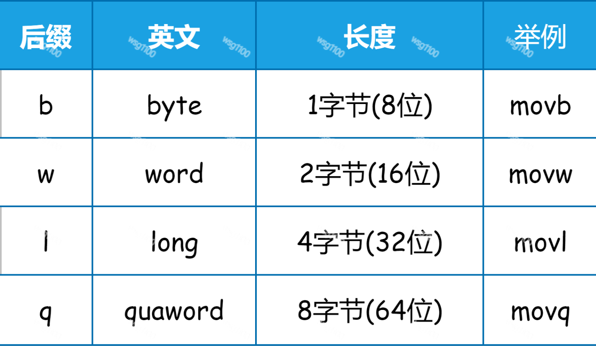
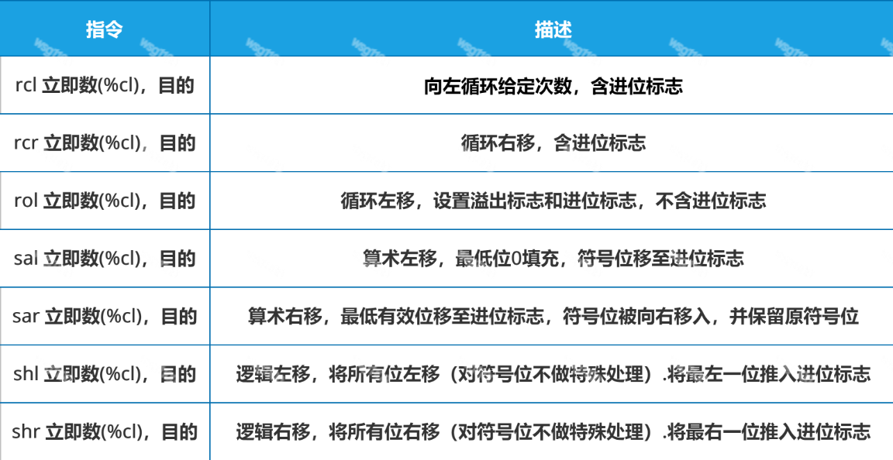
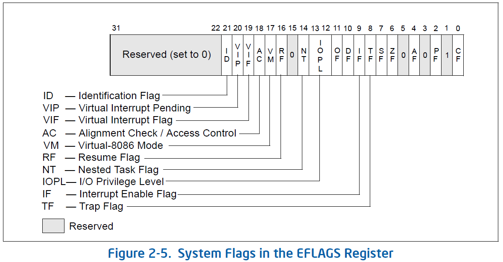
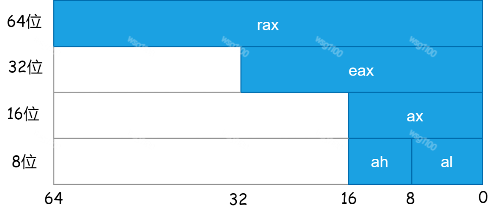
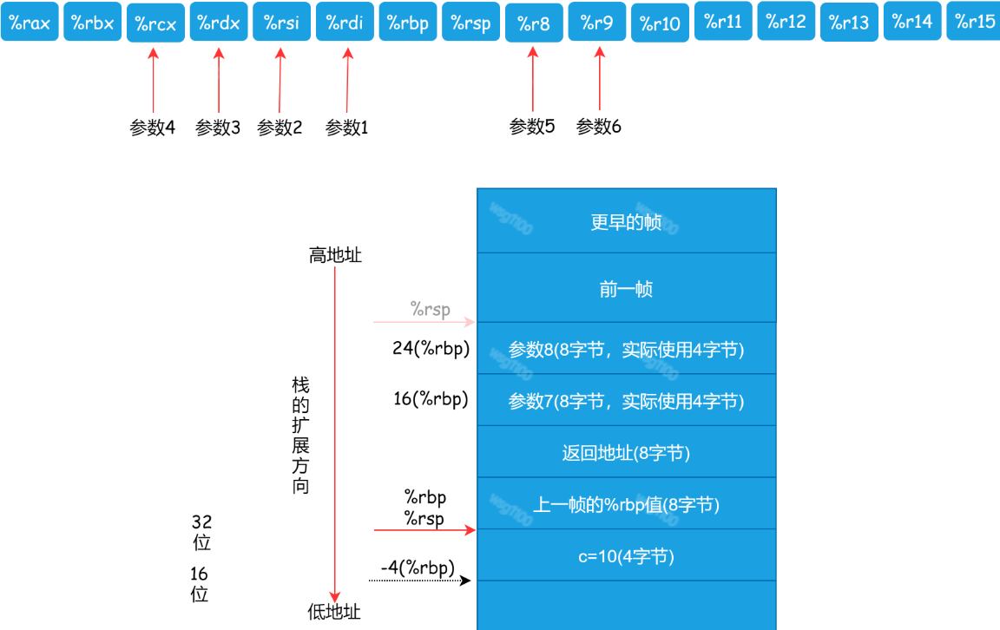

【原创】X86_64/X86 GNU汇编、寄存器、内嵌汇编
整理的X86_64/X86汇编、寄存器、C内嵌汇编笔记，主要用于查阅使用。
一、汇编语言
计算机的处理器有很多不同的架构，比如 x86-64、ARM、Power 等，每种处理器的指令集都不相同，那也就意味着汇编语言不同。目前的电脑，CPU 一般是 x86-64 架构，是 64 位机。
C语言代码：
#include <stdio.h>
int main(int argc, char* argv[])
{
printf("Hello %s!\n", "WSG");
return 0;
}
编译为汇编：
gcc -S -O2 hello.c -o hello.s
或
clang -S -O2 hello.c -o hello.s
对应的汇编代码如下：
.file "hello.c"
.section .rodata.str1.1,"aMS",@progbits,1
.LC0:
.string "WSG"
.LC1:
.string "Hello %s!\n"
.section .text.unlikely,"ax",@progbits
.LCOLDB2:
.section .text.startup,"ax",@progbits
.LHOTB2:
.p2align 4,,15
.globl main
.type main, @function
main:
.LFB23:
.cfi_startproc
subq $8, %rsp
.cfi_def_cfa_offset 16
movl $.LC0, %edx
movl $.LC1, %esi
movl $1, %edi
xorl %eax, %eax
call __printf_chk
xorl %eax, %eax
addq $8, %rsp
.cfi_def_cfa_offset 8
ret
.cfi_endproc
.LFE23:
.size main, .-main
.section .text.unlikely
.LCOLDE2:
.section .text.startup
.LHOTE2:
.ident "GCC: (Ubuntu 5.4.0-6ubuntu1~16.04.12) 5.4.0 20160609"
.section .note.GNU-stack,"",@progbits
汇编语言的组成元素：指令、伪指令、标签和注释，每种元素独占一行
指令：
助记符 操作数（源，目的）
伪指令以"."开头，末尾没有冒号":"。伪指令是是辅助性的，汇编器在生成目标文件时会用到这些信息，但伪指令不是真正的 CPU 指令，就是写给汇编器的。每种汇编器的伪指令也不同，要查阅相应的手册。常见的汇编器伪指令如下。
.file "hello.c"
.section .rodata.str1.1,"aMS",@progbits,1
标签以冒号“:”结尾，用于对伪指令生成的数据或指令做标记。标签很有用，它可以代表一段代码或者常量的地址（也就是在代码区或静态数据区中的位置）。可一开始，我们没法知道这个地址的具体值，必须生成目标文件后，才能算出来。所以，标签会简化汇编代码的编写。
.LC1:
.string "Hello %s!\n"
注释以“#”号开头，与C语言中//表示注释是一样的。
二、指令
在代码中，助记符movq,xorl中的mov和xor是指令，而q和l叫做后缀，表示操作数的位数。后缀一共有 b, w, l, q 四种，分别代表 8 位、16 位、32 位和 64 位。

比如，movq 中的 q 代表操作数是 8 个字节，也就是 64 位的。movq 就是把 8 字节从一个地方拷贝到另一个地方，而 movl 则是拷贝 4 个字节。
而在指令中使用操作数，可以使用四种格式，它们分别是：立即数、寄存器、直接内存访问和间接内存访问。

操作数可以表示立即数（常数）值、寄存器值或是来自内存的值。比例因子\(s\)必须是1、2、4或者8.
立即数以 $ 开头， 比如 $40。（下面这行代码是把 40 这个数字拷贝到 %eax 寄存器）。
movl $40, %eax
除此之外，在指令中最常见到的就是对寄存器的访问，GNU 的汇编器规定寄存器一定要以 % 开头。
直接内存访问：当我们在代码中看到操作数是一个数字时，它其实指的是内存地址。不要误以为它是一个数字，因为数字立即数必须以 $ 开头。另外，汇编代码里的标签，也会被翻译成直接内存访问的地址。比如callq _printf中的_printf是一个函数入口的地址。汇编器帮我们计算出程序装载在内存时，每个字面量和过程的地址。
间接内存访问：带有括号，比如（%rbp），它是指 %rbp 寄存器的值所指向的地址。
间接内存访问的完整形式是：
偏移量（基址，索引值，字节数）这样的格式。
其地址是：
基址 + 索引值 * 字节数 + 偏移量
举例来说：
8(%rbp)，是比 %rbp 寄存器的值加 8。
-8(%rbp)，是比 %rbp 寄存器的值减 8。
（%rbp, %eax, 4）的值，等于 %rbp + %eax*4。这个地址格式相当于访问 C 语言中的数组中的元素，数组元素是 32 位的整数，其索引值是 %eax，而数组的起始位置是 %rbp。其中字节数只能取 1,2,4,8 四个值。
几个常用的指令：
数据传输指令
mov
mov 寄存器|内存|立即数, 寄存器|内存
这个指令最常用到，用于在寄存器或内存之间传递数据，或者把立即数加载到内存或寄存器。mov 指令的第一个参数是源，可以是寄存器、内存或立即数。第二个参数是目的地，可以是寄存器或内存。
lea：lea 是“load effective address”的意思，装载有效地址，实际是mov指令的变形。其操作不影响任何条件码
lea 源，目的
参数为标准格式中给定的内存位置，但并不加载内存位置的内容，而是加载计算得出的地址。例如：如果寄存器%rdx的值为x，那么指令leaq 7(%rdx,%rdx,4),%eax将设置寄存器%rax的值为5x+7。
cld
该指令清除了标志寄存器中的DF位。 清除方向标志后，所有字符串操作（如stos，scas和其他操作）都会使索引寄存器esi或edi递增。
std
与cld相反，该指令置位了标志寄存器中的DF位。 置位方向标志后，所有字符串操作（如stos，scas和其他操作）都会使索引寄存器esi或edi递减。
stosl
stosl指令将eax复制到es：di中,若设置了EFLAGS中的方向位置位(即在STOSL指令前使用STD指令)则EDI自减4，否则(使用CLD指令)EDI自增4；
rep
重复执行%ecx次，如rep; stosl表示重复执行stosl，直到cx为0,例：
cld;rep;stosl
cld设置edi或同esi为递增方向，rep做(%ecx)次重复操作，stosl表示edi每次增加4。
栈操作指令
| 指令 | 描述 |
|---|---|
| push 源 | 把源压入栈 |
| pop 目的 | 把栈顶的元素放入目的 |
push
pushl %eax
相当于：
subl $4, %esp
mvol %eax,(%esp)
pushfl #表示将%eflage寄存器当前的数据入栈
pop
popl %eax
相当于：
movl (%esp), %eax
addl $4, %esp
运算指令
| 指令 | 描述 |
|---|---|
| sub 源， 目的 | 把目的中值减去源的值 |
| imul 源， 目的 | 把目的乘上源 |
| clto | 转换为8字（%rax符号扩展 →%rdx:%rax） |
| xor 源， 目的 | 做异或运算 |
| or 源， 目的 | 或运算 |
| and 源， 目的 | 与运算 |
| inc 目的 | 加一 |
| dec 目的 | 减一 |
| neg 目的 | 取负值 |
| not 目的 | 按位取反 |
add 指令是做加法运算，它可以采取下面的格式：
add 立即数， 寄存器
add 寄存器， 寄存器
add 内存， 寄存器
add 立即数， 内存
add 寄存器， 内存
比如，典型的 c=a+b 这样一个算术运算可能是这样的：
movl -4(%rbp), %eax #把%rbp-4的值拷贝到%eax
addl -8(%rbp), %eax #把%rbp-8地址的值加到%eax上
movl %eax, -12(%rbp) #把%eax的值写到内存地址%rbp-12
and 对两个操作数的内容进行逻辑与运算，并将结果存储到第二个操作数，将溢出标志位及进位标志设置为FALSE。
not 对操作数的每一位逻辑取反，也称为一个数的补数
or 对两个操作数进行逻辑或，并将结果存储到第二个操作数，将溢出标志位设置为FLASE
adc 带进位加法。将进位位与第一个操作数与第二个操作数相加，如果存在溢出，就将溢出及进位标志设置为真。
cdq将%eax中的字带符号扩展为%eax:%eax组成的双字。q表示这是一个双字（64字节）.这条指令通常在发出idivl指令之前。
cmp 比较两个整数，将第二个操作数减去第一个操作数，舍弃结果，设置标志位。
dec将寄存器或内存位置的数据减一。
div执行无符号除法。将%edx:%eax所含的双字除以指定寄存器或内存位置的值。运算后%eax包含商，%edx包含余数，如果商对于%eax来说过大，导致溢出，将触发中断0.
idiv执行有符号除法。
imul执行有符号乘法，将结果保存到第二个操作数。如果第二个操作数空缺，就默认为%eax,且完好的结果将存在%eax:%eax中
inc递增给定寄存器或地址。
mul执行无符号乘法，运算规则与imull相同
neg将给定寄存器或内存位置的内容补齐（二进制求补）
sbb错位减法，与adc用法相同。通常使用sub
sub将两个操作数相减，用第二个操作数减去第一个操作数，将结果保存的到第二个操作数，本指令可用于有符号整数及无符号整数
位操作

rcl将第一个操作数，向左循环移位给定次数，第一个操作数可以是立即数或寄存器%cl。循环移位包含进位标志，因此此指令实际上对33位而非32位进行操作。本指令将设置溢出标志
rcr向右循环移位，其他与上一条指令相同
rol向左循环移位，本指令设置溢出标志和进位标志，但不会将进位位作为循环移位的一部分。向左循环移位的次数可以通过立即寻址方式或寄存器%cl的值指定
ror向右循环移位，其他与上一条指令相同
sal算术左移，符号位移出至进位标志，最低有效位填充0，其他位左移。与一般左移相同，移动位数通过立即寻址方式或是寄存器%cl指定。
sar算术右移（填上符号位），最低有效位移出至进位标志，符号位被向右移入，并保留原符号位。其他位只是向右移。移动位数通过立即寻址方式或是寄存器%cl指定。
shl逻辑左移，将所有位左移（对符号位不做特殊处理）.将最左一位推入进位标志，移动位数通过立即寻址方式或是寄存器%cl指定。
shr逻辑右移，将所有位右移（对符号位不做特殊处理）.将最右一位推入进位标志，移动位数通过立即寻址方式或是寄存器%cl指定。
比较操作指令
| 指令 | 描述 |
|---|---|
| cmp 源1， 源2 | 根据源1-源2设置状态码 |
| test 源1， 源2 | 根据源1& 源2设置状态码 |
标志寄存器
OF: 溢出标志.最近的操作导致一个补码溢出---正溢出或负溢出。
SF : 符号标志.最近的操作得到的结果为负数。
ZF:零标志，最近的操作得出的结果为0。
A 辅助进位标志。
P 奇偶标志，如果最后一个结果的低字节由偶数个1，此标志为真。
CF 进位标志，最近的操作使最高位产生了进位。可用来检查无符号操作的溢出。

| 指令 | 描述 |
|---|---|
| cli、sti | 清除IF标志位（CLear Interrupt flag）、置位IF标志（SeT Interrupt flag） |
| pushfq、popfq | 将RFLAGS的值压栈和出栈 |
例如，用一条ADD指令完成等价于t=a+b的功能，这里a、b和t都是整型。然后根据结果来设置条件码:
CF
(unsigned) t < (unsigned) a无符号溢出ZF
(t = 0)零SF
(t < 0)负数OF
(a < 0==b < 0) && (t < 0 !=a < 0)有符号溢出
流控制指令
| 指令 | 描述 |
|---|---|
| jmp 标签或地址 | 跳转到某个位置的代码 |
| call 标签或地址 | 把返回地址压入栈，并跳转到指定位置的代码 |
| ret | 从栈里弹出返回地址，并跳转过去 |
call 将%eip所指的下一个值入栈，并跳转到目的地址。这用于函数调用。目的地址也可以是星号后跟寄存器的形式，这种方式为间接函数调用。例如 call *%eax将调用%eax中所含地址所指的函数
int 引起给定数字的中断。
jxx条件分支。xx为条件（由前一条指令设置）为TRUE，就跳转到给定的地址；否则，执行下一条指令。条件代码如下：
| 指令 | 含义 | 状态码 |
|---|---|---|
| je或jz | 跳转，如果相等(等于零) | ZF |
| jne或jnz | 跳转，如果不相等(等于零) | ~ZF |
| js | 跳转，如果为负值 | SF |
| jns | 跳转，如果不为负值 | ~SF |
| jg或jnle | 跳转，如果大于，有符号数 | ~(SF^OF) & ~ZF |
| jge或jnl | 跳转，如果大于等于，有符号数 | ~(SF^OF) |
| jl或jnge | 跳转，如果小于，有符号数 | SF^OF |
| jle或jne | 跳转，如果小于等于，有符号数 | SF^OF | ZF |
| …… |
- [n]a[e]—大于（无符号大于）、不大于、大于等于
- [n]b[e]—小于（无符号小于）
- [n]e—等于
- [n]z—0
- [n]g[e]—大于（带符号比较）
- [n]l[e]—小于（带符号比较）
- [n]c——进位标志集
- [n]o ——溢出标志集
- [p]p ——相等标志集
- [n]s ——符号标志集
- ecxz——%ecx为0
jmp无条件跳转。仅仅是将%eip设置为目的地址，目的地址也可以是星号后跟寄存器的形式，这种方式为间接函数调用。jmp *%eax用寄存器中的值作为跳转目标，jmp *(%rax)以内存地址%rax中的值作为跳转目标。
ret从栈种弹出值，并将%eip设置为该值，用于从函数调用返回。
三、伪指令
.equ
.equ允许你为数字分配名称。例如
.equ LINUX_SYSCALL,0x80
此时LINUX_SYSCALL就是一个常量,使用如下
int $LINUX_SYSCALL
计算一段数据的长度
.section .data
helloworld:
.ascii "hello world\n"
helloworld_end;
.equ helloworld_len, helloworld_end - helloworld
.rept
.rept用于填充每一项，.rept告诉汇编程序将.rept和.endr之间的断重复指定次数.
.rept 30 #填充30字节0
.byte 0
.endr
.endr
结束以.rept定义的重复节(section)
.lcomm
.locmm指令将创建一个符号，代指一个存储位置。使用.lcomm创建一个符号my_buffer，代指.bss段中用作缓冲区的500字节存储位置。
.section .bss
.locmm my_buffer, 500
movl $my_buffer, %ecx #将缓冲区地址加载到%ecx中
.globl
.globl声明一个全局符号。
.globl _start
_start:
.type
.type指定一个符号作为某种类型。例如告诉链接器 符号power作为函数处理：
.type power, @function
power：
……
如果其他程序中没有使用该函数，则这条指令可以不需要。power：将下一条指令的存储位置赋给符号power，这就是为什么调用该函数时需要如下执行:
call power
.ascii
将给定带引号字符串转换为字节数据
.byte
将逗号分隔符的值列表作为数据插入程序
.section
切换正在使用的节。通用节包括.text、.data、.bss
变量
定义一个long型变量begin如下：
begin:
.long 0
四、X86_64寄存器
x86-64 架构的 CPU 里有很多寄存器，我们在代码里最常用的是 16 个 64 位的通用寄存器，分别是：
%rax，%rbx，%rcx，%rdx，%rsi，%rdi，%rbp，%rsp， %r8，%r9，%r10，%r11，%r12，%r13，%r14，%r15。
这些寄存器在历史上有各自的用途，比如，rax 中的“a”，是 Accumulator(累加器) 的意思，这个寄存器是累加寄存器。
但随着技术的发展，这些寄存器基本上都成为了通用的寄存器，不限于某种特定的用途。但是，为了方便软件的编写，我们还是做了一些约定，给这些寄存器划分了用途。针对 x86-64 架构有多个调用约定（Calling Convention），包括微软的 x64 调用约定（Windows 系统）、System V AMD64 ABI（Unix 和 Linux 系统）等，下面的内容属于后者：
-
%rax 除了其他用途外，通常在函数返回的时候，把返回值放在这里。
-
%rsp 作为栈指针寄存器，指向栈顶。
-
%rdi，%rsi，%rdx，%rcx，%r8，%r9 给函数传整型参数，依次对应第 1 参数到第 6 参数。超过 6 个参数使用。
如果程序要使用 %rbx，%rbp，%r12，%r13，%r14，%r15 这几个寄存器，是由被调用者（Callee）负责保护的，也就是写到栈里，在返回的时候要恢复这些寄存器中原来的内容。其他寄存器的内容，则是由调用者（Caller）负责保护，如果不想这些寄存器中的内容被破坏，那么要自己保护起来。
上面这些寄存器的名字都是 64 位的名字，对于每个寄存器，我们还可以只使用它的一部分，并且另起一个名字。比如对于 %rax，如果使用它的前 32 位，就叫做 %eax，前 16 位叫 %ax，前 8 位（0 到 7 位）叫 %al，8 到 15 位叫 %ah。

| 原本含义 | 64位 | 32位 | 16位 | 高8位 | 低8位 | |
|---|---|---|---|---|---|---|
| Accumulator | 累加器 | rax | eax | ax | ah | al |
| Base | 基地址 | rbx | ebx | bx | bh | bl |
| Counter | 计数器 | rcx | ecx | cx | ch | cl |
| Data | 数据 | rdx | edx | dx | dh | dl |
| Source | 源 | rsi | esi | si | sil | |
| Destination | 目的 | rdi | edi | di | dil | |
| Stack Base Pointer | 栈基址 | rbp | ebp | bp | bpl | |
| Stack Pointer | 栈指针 | rsp | esp | sp | spi | |
| 后增加的8个通用寄存器 | r8-r15 | r8d-r15d | r8w-r15w | r8b-r15b |
除了通用寄存器以外，有可能的话，还要了解下面的寄存器和它们的用途，我们写汇编代码时经常跟它们发生关联：
-
8 个 80 位的 x87 寄存器，用于做浮点计算；
-
8 个 64 位的 MMX 寄存器，用于 MMX 指令（即多媒体指令），这 8 个跟 x87 寄存器在物理上是相同的寄存器。在传递浮点数参数的时候，要用 mmx 寄存器。
-
16 个 128 位的 SSE 寄存器，用于 SSE 指令。 (SIMD )。
-
指令寄存器，rip，保存指令地址。CPU 总是根据这个寄存器来读取指令。
-
flags（64 位：rflags, 32 位：eflags）寄存器：每个位用来标识一个状态。比如，它们会用于比较和跳转的指令，比如 if 语句翻译成的汇编代码，就会用它们来保存 if 条件的计算结果。
五、常见汇编结构
1. 函数调用传参
使用寄存器传参
在 X86-64 架构下，有很多的寄存器，所以程序调用约定中规定尽量通过寄存器来传递参数，而且，只要参数不超过 6 个，都可以通过寄存器来传参，使用的寄存器如下：
| 32位名称 | 64位名称 | 所传参数 |
|---|---|---|
| %edi | %rdi | 参数1 |
| %esi | %esi | 参数2 |
| %edx | %rdx | 参数3 |
| %ecx | %rcx | 参数4 |
| %r8d | %r8 | 参数5 |
| %r9d | %r9 | 参数6 |
使用栈传参
超过 6 个的参数的话，要再加上栈来传参：
根据程序调用约定的规定，参数 1～6 是放在寄存器里的，参数 7 和 8 是放到栈里的，函数参数以逆序的方向入栈,先放参数 8，再放参数 7。
int fun1(int x1, int x2, int x3, int x4, int x5, int x6, int x7, int x8){
int c = 10;
return x1 + x2 + x3 + x4 + x5 + x6 + x7 + x8 + c;
}
println("fun1:" + fun1(1,2,3,4,5,6,7,8));
# function-call2-craft.s 函数调用和参数传递
# 文本段,纯代码
.section __TEXT,__text,regular,pure_instructions
_fun1:
# 函数调用的序曲,设置栈指针
pushq %rbp # 把调用者的栈帧底部地址保存起来
movq %rsp, %rbp # 把调用者的栈帧顶部地址,设置为本栈帧的底部
movl $10, -4(%rbp) # 变量c赋值为10,也可以写成 movl $10, (%rsp)
# 做加法
movl %edi, %eax # 第一个参数放进%eax
addl %esi, %eax # 加参数2
addl %edx, %eax # 加参数3
addl %ecx, %eax # 加参数4
addl %r8d, %eax # 加参数5
addl %r9d, %eax # 加参数6
addl 16(%rbp), %eax # 加参数7
addl 24(%rbp), %eax # 加参数8
addl -4(%rbp), %eax # 加上c的值
# 函数调用的尾声,恢复栈指针为原来的值
popq %rbp # 恢复调用者栈帧的底部数值
retq # 返回
.globl _main # .global伪指令让_main函数外部可见
_main: ## @main
# 函数调用的序曲,设置栈指针
pushq %rbp # 把调用者的栈帧底部地址保存起来
movq %rsp, %rbp # 把调用者的栈帧顶部地址,设置为本栈帧的底部
subq $16, %rsp # 这里是为了让栈帧16字节对齐，实际使用可以更少
# 设置参数
movl $1, %edi # 参数1
movl $2, %esi # 参数2
movl $3, %edx # 参数3
movl $4, %ecx # 参数4
movl $5, %r8d # 参数5
movl $6, %r9d # 参数6
movl $7, (%rsp) # 参数7
movl $8, 8(%rsp) # 参数8
callq _fun1 # 调用函数
# 为pritf设置参数
leaq L_.str(%rip), %rdi # 第一个参数是字符串的地址
movl %eax, %esi # 第二个参数是前一个参数的返回值
callq _printf # 调用函数
# 设置返回值。这句也常用 xorl %esi, %esi 这样的指令,都是置为零
movl $0, %eax
addq $16, %rsp # 缩小栈
# 函数调用的尾声,恢复栈指针为原来的值
popq %rbp # 恢复调用者栈帧的底部数值
retq # 返回
# 文本段,保存字符串字面量
.section __TEXT,__cstring,cstring_literals
L_.str: ## @.str
.asciz "fun1 :%d \n"
其栈帧的变化过程，如下：

使用栈来传递参数时，需要将函数参数以逆序的方向入栈，并发出call指令。调用后在将参数出栈：
printf("The numer is %d"，88);
.section .data
test_string:
.ascii "The numer is %d\0"
.section .text
pushl $88
pushl $test_string
call printf
popl %eax
popl %eax
2. 变量赋值
汇编语言中全局变量访问方式与局部变量不同。全局变量通过直接寻址访问，而局部变量使用基址寻址方式，例如
int my_global_var;
int foo()
{
int my_local_var;
my_local_var = 1;
my_glocal_var = 2;
return 0
}
用汇编表示以上为：
.section .data
.lcomm my_globl_var, 4
.type foo, @function
foo:
pushl %ebp #保存原栈基址
movl %esp, %ebp #令栈指针指向新基址指针
subl $4, %esp #为变量my_local_var保留空间
.equ my_local_var, -4 #用my_local_var寻找局部变量
movl $1, my_local_var(%ebp)
movl $2, my_global_var
movl %ebp, %esp #清除函数变量并返回
popl %ebp
ret
3. 指针
指针，它只是保存某个值的地址。全局变量：
int global_data = 30;
其对应的汇编为:
.section .data
global_data:
.long 30
C语言中取地址如下：
p = &global_data;
对应的汇编为：
movl $global_data, %eax
可以看到汇编语言中总是通说指针访问内存，也就是直接寻址方式，为了取得指针本身，必须采用立即寻址方式。
局部变量略为复杂，C语言代码如下：
void foo()
{
int a;
int *b;
a = 30;
b = &a;
*b = 44;
}
对应汇编如下：
foo:
#标准函数开头
pushl %ebp
movl %ebp,%esp
#保留两个字的内存
subl -8, %ebp
.equ A_VAR, -4
.equ B_VAR, -8
#a = 30
movl $30, A_VAL(%ebp)
#b = &a
movl $A_VAR, B_VAR(%ebp)
addl %ebp, B_VAR(%ebp)
#*b = 30
movl B_VAR(%ebp), %eax #B
movl $30, (%eax)
#标准结束函数
movl %ebp ,%esp
popl %ebp
ret
要获取局部变量的地址，必须按基址寻址方式计算该地址。还有更简单的方式就是lea指令，该指令加载有效地址，会让计算机计算地址，然后在需要的时候加上地址：
#b = &a
leal A_VAR(%ebp), %eax
movl %eax, B_VAR(%ebp)
4. 结构
结构时对内存块的简单描述，例如，在C语言中可以使用如下代码：
struct person{
char pristname[40];
char lastname[40];
int age
};
汇编中只是给予你一种使用84字节数据的方式。
.equ PERSON_SIZE, 84
.equ PERSON_FIRSTNAME_OFFSET, 0
.equ PERSON_LASTNAME_OFFSET, 40
.equ PERSON_AGE_OFFSET, 80
当声明此类型的一个变量时，保留84字节空间就行，C代码如下：
void foo()
{
struct person p;
/**/
……
}
对应的汇编代码如下：
foo:
#标准开头
pushl %ebp
movl %esp, %ebp
#为局部变量分配空间
subl $PERSON_SIZE, %esp
#这是变量相对于%ebp的偏移量
.equ P_VAR, 0-PERSON_SIZE
……
#标准结束
movl %ebp, %esp
pop %ebp
ret
访问结构体成员，必须使用基址寻址方式，偏移量为上面定义的值。如C语言设置年龄如下：
p.age = 30;
对应的汇编入下：
movl $30, P_VAR + PERSON_AGE_OFFSET(%ebp)
5. 循环
C语言语句如下：
while (a < b){
/*某些操作*/
}
/*结束循环*/
这些对应的汇编如下所示：
loop_begin:
movl a, %eax
movl b, %ebx
cmpl %eax, %ebx
jge loop_end
loop_body:
#某些操作
jmp loop_begin
loop_end:
#结束循环
上面说到寄存器%ecx可用作计数器，终止条件为0,loop 指令会递减%ecx，并在%ecx不为0 的条件下跳转到指定地址，例如，需执行某个语句100次C 语言如下：
for (i = 0; i < 100; i++){
/*某些操作*/
}
汇编实现如下：
loop_initalize:
movl 100,%ecx
loop_begin:
#某些操作
#递减%ecx，若%ecx不为0则继续循环
loop loop_begin
rest_of_program:
6. if语句
if(a == b){
/*真分支操作*/
}else{
/*假分支操作*/
}
/*真假汇合*/
在汇编中表示如下：
#将a.b移入寄存器用于比较
movl a, %eax
movl b, %ebx
#比较
cmpl %eax, %ebx
#跳转到真分支
je true_branch
fale_branch: #非必要标签，只是为了说明这是假分支
#假分支代码
#跳到真假汇合
jmp reconverge
true_branch：
#真分支代码
reconverge:
7. 浮点数使用
之前我们用的例子都是采用整数，现在使用浮点数来做运算。下面这段代码：
float fun1(float a, float b){
float c = 2.0;
return a + b + c;
}
使用 -O2 参数，把 C 语言的程序编译成汇编代码如下：
.file "float.c"
.section .text.unlikely,"ax",@progbits
.LCOLDB1:
.text
.LHOTB1:
.p2align 4,,15
.globl fun1
.type fun1, @function
fun1:
.LFB0:
.cfi_startproc
addss %xmm0, %xmm1 #浮点数传参用XMM寄存器，加法用addss指令
addss .LC0(%rip), %xmm1 #把常量2.0加到xmm0上，xmm0保存返回值
movaps %xmm1, %xmm0
ret
.cfi_endproc
.LFE0:
.size fun1, .-fun1
.section .text.unlikely
.LCOLDE1:
.text
.LHOTE1:
.section .rodata.cst4,"aM",@progbits,4
.align 4
.LC0:
.long 1073741824 ## float 2 常量
.ident "GCC: (Ubuntu 5.4.0-6ubuntu1~16.04.12) 5.4.0 20160609"
.section .note.GNU-stack,"",@progbits
这个代码的结构你应该熟悉了，栈帧的管理方式都是一样的，都要维护 %rbp 和 %rsp。不一样的地方，有几个地方：
-
传参。给函数传递浮点型参数，是要使用 XMM 寄存器。
-
指令。浮点数的加法运算，使用的是
addss指令，它用于对单精度的标量浮点数做加法计算，这是一个 SSE1 指令。SSE1 是一组指令，主要是对单精度浮点数 (比如 C 或 Java 语言中的 float) 进行运算的，而 SSE2 则包含了一些双精度浮点数（比如 C 或 Java 语言中的 double）的运算指令。 -
返回值。整型返回值是放在
%eax寄存器中，而浮点数返回值是放在xmm0寄存器中的。调用者可以从这里取出来使用。
六、C嵌入汇编
为什么要使用汇编语言有两个可能的原因。首先是，当我们接近硬件时，C受到限制。例如。没有C语句可直接修改处理器状态寄存器。第二个原因是创建高度优化的代码。(以下内容大多来源于GCC-Inline-Assembly-HOWTO.)
1.基本内嵌
基本内联汇编的格式非常简单。它的基本形式是
asm("assembly code");
例如：
asm("movl %ecx %eax"); /* moves the contents of ecx to eax */
__asm__("movb %bh (%eax)"); /*moves the byte from bh to the memory pointed by eax */
在这里使用过asm和__asm__。两者都有效。如果关键字asm与我们程序中的某些内容冲突，我们可以使用__asm__。如果我们有多个指令，我们用双引号每行写一个，并在指令后面加上'\ n'和'\ t'。这是因为gcc将每个指令作为一个字符串发送至汇编器。如下：
__asm__ ("movl %eax, %ebx\n\t"
"movl $56, %esi\n\t"
"movl %ecx, $label(%edx,%ebx,$4)\n\t"
"movb %ah, (%ebx)");
如果在我们的代码中，我们更改一些寄存器中的内容并从asm返回而不恢复为修改前的值，则会发生一些不好的事情。这是因为GCC不知道寄存器内容的变化，这导致我们遇到麻烦，特别是当编译器进行一些优化时。它会假设某些寄存器包含某些变量的值，我们可能在没有通知GCC的情况下对其进行了更改，并且它仍然没有发生任何事情。我们可以做的是使用那些没有副作用的指令或在我们退出或等待某些事情崩溃时解决问题。这是我们想要一些扩展功能的地方。扩展的asm为我们提供了该功能。
2.扩展内嵌汇编
在基本的内联汇编中，只有指令。在扩展汇编中，我们还可以指定操作数。它允许我们指定输入寄存器，输出寄存器和破坏寄存器列表。指定要使用的寄存器并不是强制性的，我们可以将这个问题留给GCC，这可能更适合GCC的优化方案。无论如何，基本格式是：
asm ( assembler template
: output operands /*optional*/
: input operands /*ooptional*/
: list of clobbered registers /*ooptional*/
);
- assembler template由汇编指令组成.
- 每个操作数由操作数约束字符串描述，后跟括号中的C表达式。
- 冒号将汇编程序模板与第一个输出操作数分隔开，另一个冒号将最后一个输出操作数与第一个输入分开，如果有的话。
- 逗号分隔每个组中的操作数。操作数的总数限制为10或机器描述中任何指令模式中的最大操作数数量，以较大者为准。
asm_(
汇编语句模版:
输出部分:
输入部分:
破坏描述部分:);
例如：
int a=10, b;
asm ("movl %1, %%eax;
movl %%eax, %0;"
:"=r"(b) /* output */
:"r"(a) /* input */
:"%eax" /* clobbered register */
);
这里我们做的是使用汇编指令使'b'的值等于'a'的值。一些兴趣点是：
- “b”是输出操作数，由％0引用，“a”是输入操作数，由％1引用。
- “r”是对操作数的约束。我们稍后会详细介绍约束。目前，“r”向GCC表示使用任何寄存器来存储操作数。输出操作数约束应该有一个约束修饰符“=”。而这个修饰符表示它是输出操作数并且是只写的。
- 寄存器名称前面有两个％的前缀。这有助于GCC区分操作数和寄存器。操作数具有单个％作为前缀。
- 第三个冒号后的修改后的寄存器％eax告诉GCC％eax的值将在“asm”内修改，因此GCC不会使用该寄存器来存储任何其他值。
当“asm”的执行完成时，“b”将反映更新的值，因为它被指定为输出操作数。换句话说，“asm”中对“b”的改变应该反映在“asm”之外。
现在我们可以详细查看每个字段。
2.1汇编模板
汇编程序模板包含插入C程序内的汇编指令集。格式如下：要么每条指令都用双引号括起来，要么整个指令组都在双引号内。每条指令也应以分隔符结束。有效分隔符是换行符（\ n）和分号（;）。'\ n'后面可能跟一个标签（\ t）。对应于C表达式的操作数由％0，％1 ......等表示。
2.2操作数
C表达式用作“asm”中的汇编指令的操作数。每个操作数都被写为双引号中的第一个操作数约束。对于输出操作数，在引号内也会有一个约束修饰符，然后是C表达式，它代表操作数。即
“约束”（C表达式）是一般形式。对于输出操作数，将有一个额外的修饰符。约束主要用于决定操作数的寻址模式。它们还用于指定要使用的寄存器。
如果我们使用多个操作数，则用逗号分隔。
在汇编程序模板中，每个操作数都由数字引用。编号如下进行。如果总共有n个操作数（包括输入和输出），则第一个输出操作数编号为0，按递增顺序继续，最后一个输入操作数编号为n-1。最大操作数是我们在上一节中看到的。
输出操作数表达式必须是左值。输入操作数不受此限制。他们可能是表达式。扩展的asm功能最常用于编译器本身不知道存在的机器指令;-)。如果无法直接寻址输出表达式（例如，它是位字段），则我们的约束必须允许寄存器。在这种情况下，GCC将使用寄存器作为asm的输出，然后将该寄存器内容存储到输出中。
如上所述，普通输出操作数必须是只写的; GCC将假设在指令之前这些操作数中的值已经死亡且无需生成。扩展的asm还支持输入输出或读写操作数。
所以现在我们专注于一些例子。我们想要将数字乘以5。为此，我们使用指令
lea。asm ("leal (%1,%1,4), %0" : "=r" (five_times_x) : "r" (x) );这里我们的输入是'x'。我们没有指定要使用的寄存器。GCC将选择一些输入寄存器，一个用于输出，并按我们的意愿行事。如果我们希望输入和输出驻留在同一个寄存器中，我们可以指示GCC这样做。这里我们使用那些类型的读写操作数。通过指定适当的约束，例如。
sm ("leal (%0,%0,4), %0" : "=r" (five_times_x) : "0" (x) );现在输入和输出操作数在同一个寄存器中。但是我们不知道哪个寄存器。现在，如果我们也要指定它，那么有一种方法。
asm ("leal (%%ecx,%%ecx,4), %%ecx" : "=c" (x) : "c" (x) );
从GCC 3.1版开始，GCC编译器就支持符号名称,在代码部分，操作数由百分号引用，后跟方括号内的相关符号名。它引用包含相同符号名的操作数列表之一中的条目。如xenomai线程切换代码示例：
static inline void do_switch_threads(struct xnarchtcb *out_tcb,
struct xnarchtcb *in_tcb,
struct task_struct *outproc,
struct task_struct *inproc)
{
long ebx_out, ecx_out, edi_out, esi_out;
__asm__ __volatile__("pushfl\n\t"
"pushl %%ebp\n\t"
"movl %[spp_out_ptr],%%ecx\n\t"
"movl %%esp,(%%ecx)\n\t"
"movl %[ipp_out_ptr],%%ecx\n\t"
"movl $1f,(%%ecx)\n\t"
"movl %[spp_in_ptr],%%ecx\n\t"
"movl %[ipp_in_ptr],%%edi\n\t"
"movl (%%ecx),%%esp\n\t"
"pushl (%%edi)\n\t"
__CANARY_SWITCH
"jmp __switch_to\n\t"
"1: popl %%ebp\n\t"
"popfl\n\t"
: "=b"(ebx_out),
"=&c"(ecx_out),
"=S"(esi_out),
"=D"(edi_out),
"+a"(outproc),
"+d"(inproc)
__CANARY_OUTPUT
: [spp_out_ptr] "m"(out_tcb->spp),
[ipp_out_ptr] "m"(out_tcb->ipp),
[spp_in_ptr] "m"(in_tcb->spp),
[ipp_in_ptr] "m"(in_tcb->ipp)
__CANARY_INPUT
: "memory");
}
其中的asm符号操作符使用单独的名称空间。也就是说，与C代码中的符号无关。但是必须在每个asm语句的符号必须唯一。
2.3 Clobber列表
一些指令破坏了一些硬件寄存器。我们必须在clobber-list中列出这些寄存器，即asm函数中第三个' ： ' 之后的字段。这是为了告知gcc我们将自己使用和修改它们。所以gcc不会假设它加载到这些寄存器中的值是有效的。我们不应该在此列表中列出输入和输出寄存器。因为，gcc知道“asm”使用它们（因为它们被明确指定为约束）。如果指令隐式或显式地使用任何其他寄存器（并且输入或输出约束列表中不存在寄存器），则必须在破坏列表中指定这些寄存器。
如果我们的指令可以改变条件代码寄存器，我们必须将“cc”添加到破坏寄存器列表中。
如果我们的指令以不可预测的方式修改内存，请将“memory”添加到修饰寄存器列表中。这将导致GCC不在汇编器指令的寄存器中保持缓存的内存值。如果受影响的内存未在asm的输入或输出中列出，我们还必须添加volatile关键字。
我们可以根据需要多次读取和编写被破坏的寄存器。考虑模板中多个指令的示例; 它假定子程序_foo接收在寄存器eax和ecx参数的参数。
asm ("movl %0,%%eax;
movl %1,%%ecx;
call _foo"
: /* no outputs */
: "g" (from), "g" (to)
: "eax", "ecx"
);
2.4 Volatile
如果您熟悉内核源代码或类似的一些漂亮的代码，您必须已经看到许多函数声明为volatile或 __volatile__。我之前提到过关键字asm和__asm__。那这 volatile是什么？
如果我们的汇编语句必须在我们放置的地方执行，（即不能作为优化移出循环），请将关键字volatile放在asm之后和（）之前。我们将其声明为
asm volatile ( ... : ... : ... : ...);
使用__volatile__的时候，我们必须非常小心。
C编译器的代码优化器也会优化内嵌asm代码。如果我们的程序集只是用于进行一些计算并且没有任何副作用，那么最好不要使用关键字volatile。避免gcc无法优化代码。
在 一些有用的方法 中，我提供了许多内联asm函数的示例。在那里我们可以看到详细的clobber列表。
2.5 常用约束
存在许多约束，其中仅频繁使用少数约束。我们将看看这些约束。
- 注册操作数约束（r）
使用此约束指定操作数时，它们将存储在通用寄存器（GPR）中。采用以下示例：
asm ("movl %%eax, %0\n" :"=r"(myval));
这里变量myval保存在寄存器中，寄存器中的值 eax被复制到该寄存器中，并且值myval从该寄存器更新到存储器中。当指定“r”约束时，gcc可以将变量保存在任何可用的GPR中。要指定寄存器，必须使用特定的寄存器约束直接指定寄存器名称。他们是：
+---+--------------------+
| r | Register(s) |
+---+--------------------+
| a | %eax, %ax, %al |
| b | %ebx, %bx, %bl |
| c | %ecx, %cx, %cl |
| d | %edx, %dx, %dl |
| S | %esi, %si |
| D | %edi, %di |
+---+--------------------+
- 内存操作数约束（m）
当操作数在存储器中时，对它们执行的任何操作将直接发生在存储器位置，而不是寄存器约束，寄存器约束首先将值存储在要修改的寄存器中，然后将其写回存储器位置。但是寄存器约束通常仅在它们对于指令绝对必要时才使用，或者它们显著加速了该过程。在需要在“asm”内更新C变量并且您真的不想使用寄存器来保存其值时，可以最有效地使用内存约束。例如，idtr的值存储在内存位置loc中：
asm("sidt %0\n" : :"m"(loc));
- 匹配（数字）约束
在某些情况下，单个变量可以作为输入和输出操作数。可以通过使用匹配约束在“asm”中指定这种情况。
asm ("incl %0" :"=a"(var):"0"(var));
我们在操作数小节中也看到了类似的例子。在此示例中，匹配约束，寄存器％eax用作输入和输出变量。var输入读取到％eax，更新后％eax在增量后再次存储在var中。这里的“0”指定与第0个输出变量相同的约束。也就是说，它指定var的输出实例应仅存储在％eax中。可以使用此约束：
- 在从变量读取输入或修改变量并将修改写回同一变量的情况下。
- 如果不需要输入和输出操作数的单独实例。
使用匹配约束的最重要的影响是它们导致有效使用可用寄存器。
- memory
volatile
将volatile属性添加到asm语句中，以指示编译器不要优化汇编部分代码。memory**
它告诉编译器汇编程序指令可能会更改内存位置。将强制编译器在执行汇编程序指令之前先保存缓存里的值到内存，然后在加载它们。并且保留执行顺序，因为在使用内存破坏者执行asm语句后，所有变量的内容都是不可预测的。
使所有缓存的值无效可能不是最佳的。除此之外，可以添加一个虚拟操作数来创建人工依赖项：
2.6约束修饰符
在使用约束时，为了更精确地控制约束的影响，GCC为我们提供了约束修饰符。最常用的约束修饰符是
-
“=”：表示该操作数对该指令是只写的; 先前的值被丢弃并由输出数据替换。
-
“＆”：表示此操作数是一个earlyclobber操作数，在使用输入操作数完成指令之前修改该操作数。因此，该操作数可能不在于用作输入操作数的寄存器或任何存储器地址的一部分。如果输入操作数仅用作输入，则在写入早期结果之前，它可以绑定到earlyclobber操作数。
更多约束描述

2.7 一些有用的方法
现在我们已经介绍了关于GCC内联汇编的基本理论，现在我们将集中讨论一些简单的例子。将内联asm函数编写为MACRO总是很方便。我们可以在内核代码中看到许多asm函数。（/usr/src/linux/include/asm/*.h）。
- 首先，我们从一个简单的例子开始。我们将编写一个程序来相加两个数字。
int main(void)
{
int foo = 10, bar = 15;
__asm__ __volatile__("addl %%ebx,%%eax"
:"=a"(foo)
:"a"(foo), "b"(bar)
);
printf("foo+bar=%d\n", foo);
return 0;
}
在这里，我们坚持要求GCC在％eax中存储foo，bar存储在％ebx中，我们也希望结果保存在％eax中。'='符号表示它是输出寄存器。现在我们可以用其他方式实现变量和整数相加。
__asm__ __volatile__(
" lock ;\n"
" addl %1,%0 ;\n"
: "=m" (my_var)
: "ir" (my_int), "m" (my_var)
: /* no clobber-list */
);
这是一个原子加法。我们可以删除指令'lock'来删除原子性。在输出字段中，“= m”表示my_var是输出，它在内存中。类似地，“ir”表示，my_int是一个整数，应该驻留在某个寄存器中（回想一下我们上面看到的表）。clobber列表中没有寄存器。
- 现在我们将对一些寄存器/变量执行一些操作并比较该值。
__asm__ __volatile__( "decl %0; sete %1"
: "=m" (my_var), "=q" (cond)
: "m" (my_var)
: "memory"
);
这里，my_var的值减1，如果结果值是0 ，则设置变量cond。我们可以通过添加指令“lock; \ n \ t”作为汇编程序模板中的第一条指令来添加原子性。
以类似的方式，我们可以使用“incl％0”而不是“decl％0”，以便增加my_var。
这里要注意的是（i）my_var是驻留在内存中的变量。（ii）约束“= q”保证了cond在eax，ebx，ecx和edx寄存器其中之一中。（iii）我们可以看到内存在clobber列表中。即，代码正在改变内存的内容。
- 如何设置/清除寄存器中的位？
__asm__ __volatile__( "btsl %1,%0"
: "=m" (ADDR)
: "Ir" (pos)
: "cc"
);
这里，ADDR变量位置'pos'处的位（存储器变量）设置为1， 我们可以使用'btrl'代替'btsl'来清除该位。pos的约束“Ir”表示pos位于寄存器中，其值的范围为0-31（x86依赖约束）。也就是说，我们可以在ADDR设置/清除变量的第0到第31位。由于条件代码将被更改，我们将“cc”添加到clobberlist。
- 现在我们来看一些更复杂但有用的功能。字符串副本。
static inline char * strcpy(char * dest,const char *src)
{
int d0, d1, d2;
__asm__ __volatile__( "1:\tlodsb\n\t"
"stosb\n\t"
"testb %%al,%%al\n\t"
"jne 1b"
: "=&S" (d0), "=&D" (d1), "=&a" (d2)
: "0" (src),"1" (dest)
: "memory");
return dest;
}
源地址存储在esi中，目标位于edi中，然后启动复制，当我们达到0时，复制完成。约束“＆S”，“＆D”，“＆a”表示寄存器esi，edi和eax是early clobber寄存器，即它们的内容将在函数完成之前改变。这里也很清楚为什么memory在clobberlist中。
我们可以看到一个类似的函数移动一个double words。请注意，该函数声明为宏。
#define mov_blk(src, dest, numwords) \
__asm__ __volatile__ ( \
"cld\n\t" \
"rep\n\t" \
"movsl" \
: \
: "S" (src), "D" (dest), "c" (numwords) \
: "%ecx", "%esi", "%edi" \
)
这里我们没有输出，因此寄存器ecx，esi和edi的内容发生的变化是块移动的副作用。所以我们必须将它们添加到clobber列表中.
- 在Linux中，使用GCC内联汇编实现系统调用。让我们看看如何实现系统调用。所有系统调用都写成宏（linux / unistd.h）。例如，具有三个参数的系统调用被定义为宏，如下所示。
#define _syscall3(type,name,type1,arg1,type2,arg2,type3,arg3) \
type name(type1 arg1,type2 arg2,type3 arg3) \
{ \
long __res; \
__asm__ volatile ( "int $0x80" \
: "=a" (__res) \
: "0" (__NR_##name),"b" ((long)(arg1)),"c" ((long)(arg2)), \
"d" ((long)(arg3))); \
__syscall_return(type,__res); \
}
每当进行具有三个参数的系统调用时，上面显示的宏用于进行调用。系统调用号放在eax中，然后是ebx，ecx，edx中的每个参数。最后，“int 0x80”是使系统调用工作的指令。可以从eax收集返回值。
每个系统调用都以类似的方式实现。退出是一个单个参数系统调用，让我们看看它的代码是什么样的。它如下所示。
{
asm("movl $1,%%eax; /* SYS_exit is 1 */
xorl %%ebx,%%ebx; /* Argument is in ebx, it is 0 */
int $0x80" /* Enter kernel mode */
);
}
退出的数量是“1”，这里，它的参数是0。所以我们安排eax包含1和ebx包含0和by int $0x80，exit(0)执行。这就是退出的方式。
七、编译
汇编与链接
汇编：
as -o xxxx xxxx.s
as -32 -o xxxx xxxx.s #汇编32位
将汇编代码汇编成动态链接库(-shared)：
ld -shared xxx.o yyy.o -o libzzz.so
使用动态链接。
ld -dynamic-linker /lib/ld-linux.so.2 -o xxxx xxxx.o -lc -lzzz
-lc表示链接到库c,也就是libc.so，-dynamic-linker链接动态库。
参考资料
版权声明：本文为本文为博主原创文章，转载请注明出处。如有问题，欢迎指正。博客地址：https://www.cnblogs.com/wsg1100/